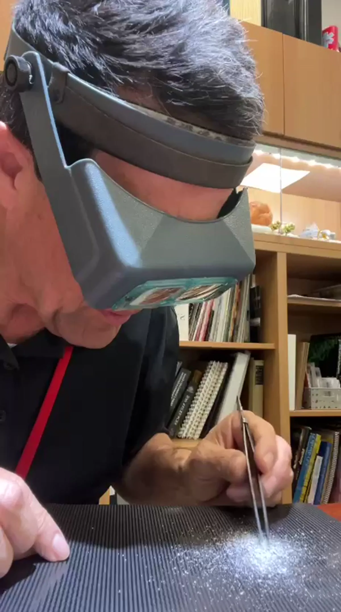
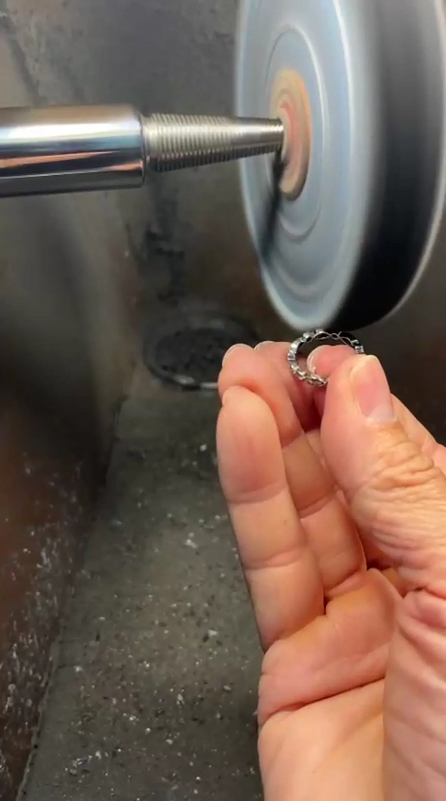
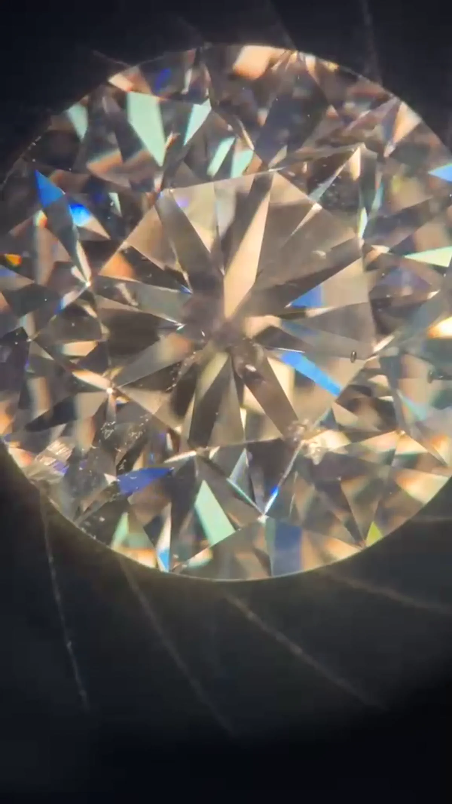
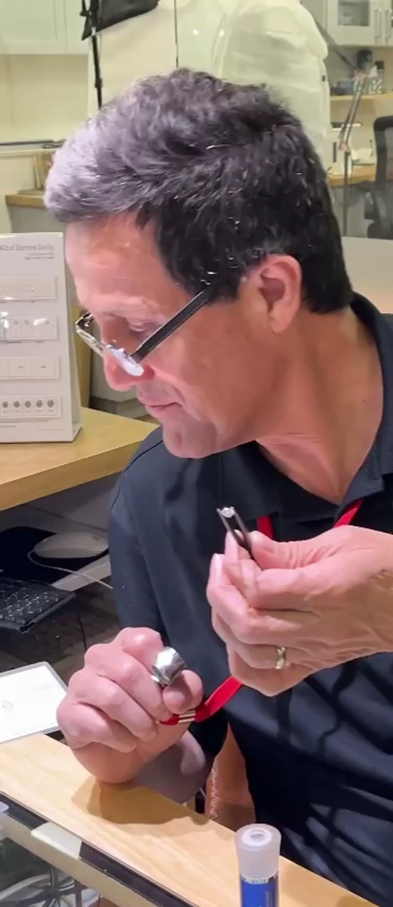

VOLUME 01DIAMONDS, SEEN DIFFERENTLY
Stories that reward
a closer look.
Short films and thoughtful explanations for understanding not only how a diamond looks, but why.
04 STORIES · 05:10The collection
Latest stories

01:16 Microdiamonds:Tiny Stones That Require Extraordinary Precision See how tiny diamonds are inspected, matched and handled by hand before becoming a seamless field of light. Open story

01:34 How a Diamond Is Polished:The Process Behind Its Brilliance From rough planning to the final finish, discover the precision that allows a diamond and its setting to reflect light beautifully. Open story

01:39 Diamond Inclusions:The Natural Story Inside Every Stone Look beyond the sparkle and discover the unique internal map that makes every natural diamond its own. Open story

00:41 Hearts & Arrows The hidden geometry that reveals an exceptional level of cut, proportion and optical symmetry. Open storyNew films and field notes will be added one story at a time.
Ask Guillermo a question